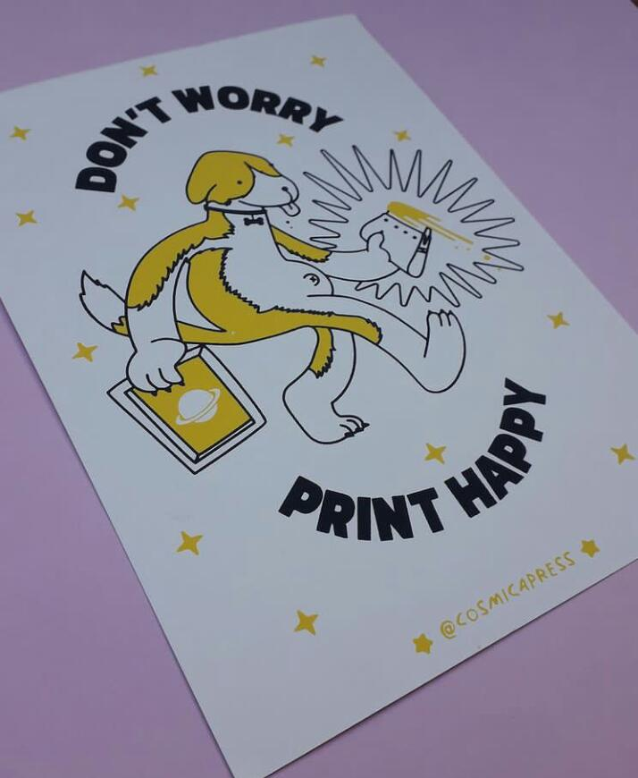
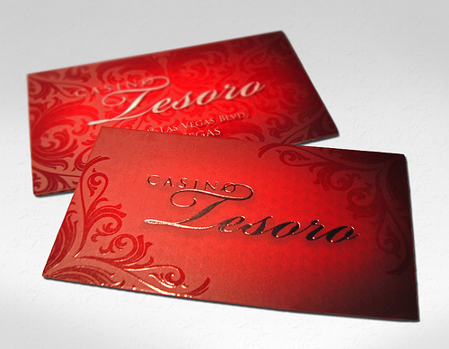
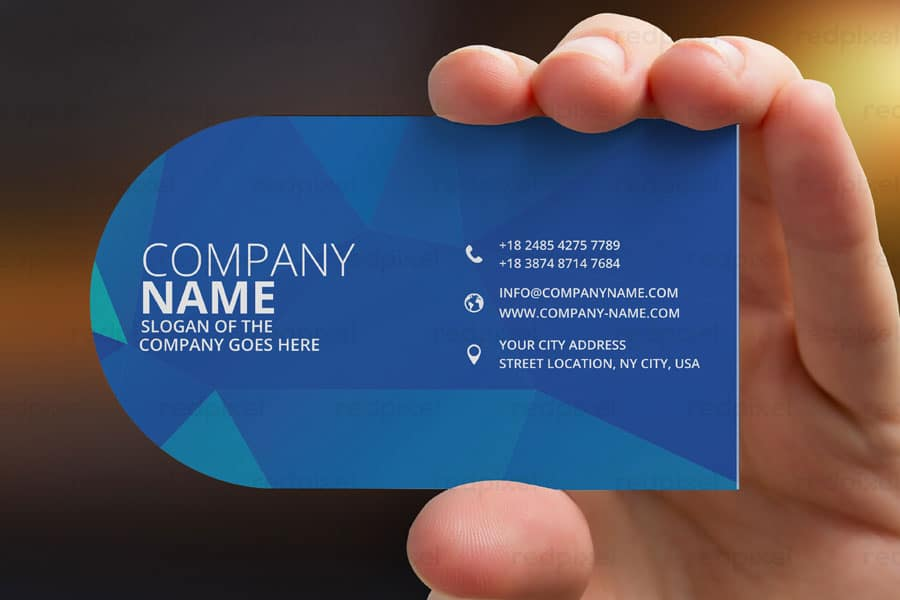
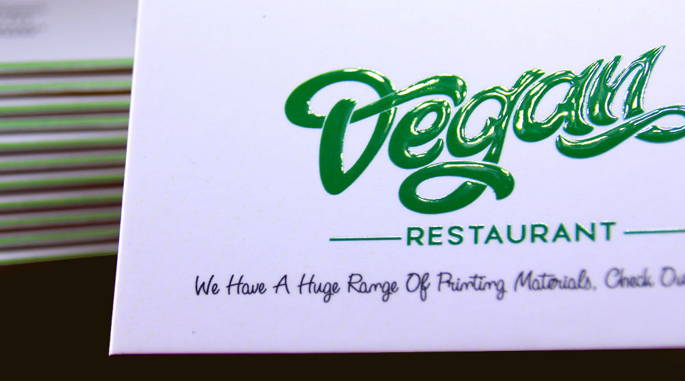
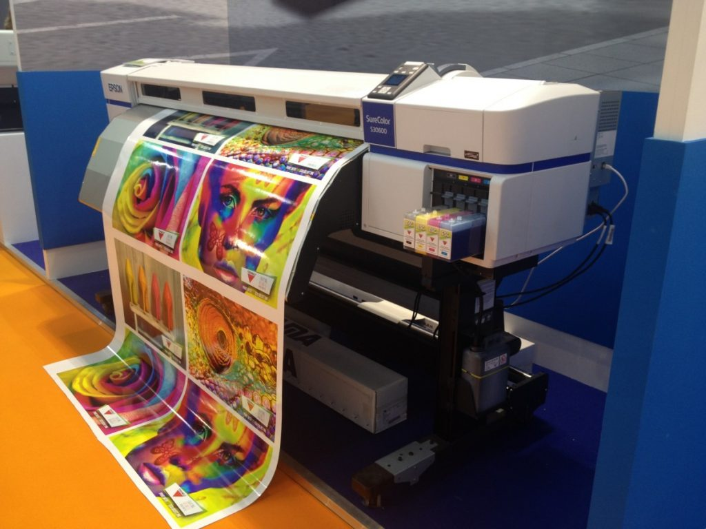

Silk Screen PrintingbyWaqar Khizar |
We deal with all Kinds of Screen Printing
Screen printing is the process of transferring a stencilled design onto a flat surface using a mesh screen, ink and a squeegee. Fabric and paper are the most commonly screen-printed surfaces, but with specialised inks it's also possible to print onto wood, metal, plastic, and even glass.
Screen Printing is the unique visual result it creates. The inks used are very durable, the colours are extremely vivid, particularly for outdoor uses, making this a unique reproduction technique. a higher quality output than digital prints
An ultraviolet coating is applied to the card to create a glossy finish that gleams and reflects light, giving your business card a unique, one of a kind look and multi-textured feel.
Your audience is what should determine the quote, design and information as your bussiness card
You want your business to stand out but also prove to your target audience that you represent something they will admire. Putting inspirational quotes on your business cards is a great way to do that.
Convince someone to look at the world from a different perspective. Encourage other businesses to see or address a problem in the industry that you can offer a solution to. Give people trying to better themselves the motivation they need to keep fighting the good fight. Inspire others to stop dreaming and take action towards those dreams.
Offset printing is a common printing technique in which the inked image is transferred (or "offset") from a plate to a rubber blanket and then to the printing surface. ... Ink rollers transfer ink to the image areas of the image carrier, while a water roller applies a water-based film to the non-image areas.
Advantages of offset printing compared to other printing methods include:
1. Consistent high image quality.
2. Quick and easy production of printing plates.
3. Longer printing plate life than on direct litho presses because there is no direct contact between the plate and the printing surface Cost.
Superior image quality that is reliable. · Better color fidelity, which refers to both the accuracy of the colors and their balance in the design.
Muhammad Furqan Aslam
+923004310261
Copyright ©2001-2022 For
Silk Screen Printing by Waqar khizer